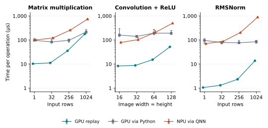
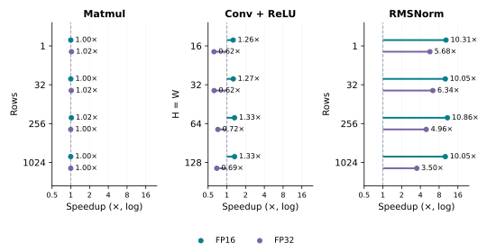
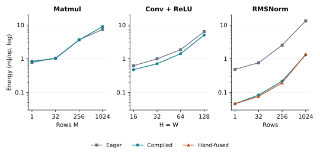

Benchmarking an RTX 3060
and a Snapdragon NPU
Latency, compiler speedups, and GPU energy per operation
I wanted to see how the same neural-network operations behave on my laptop's RTX 3060 and a Snapdragon 8 Gen 3 through Qualcomm AI Hub. I tested matrix multiplication, convolution + ReLU, and RMSNorm, then inspected how compilation changed the work.
- Latency: GPU graph replay was faster across all 12 matched shapes. Including Python dispatch changes some comparisons.
- Compilation: FP16 RMSNorm at 32×1024 ran 10.05× faster in graph replay, with nine kernels becoming one.
- GPU energy: that workload used 89% less energy per operation when compiled in this run, despite higher average power during sustained replay.
The setup
| RTX 3060 Laptop | Snapdragon 8 Gen 3 | |
|---|---|---|
| Device | 6 GiB GPU · WSL2 | Galaxy S24 · Hexagon v75 NPU |
| Software | PyTorch 2.11 · CUDA 12.8 | QNN · QAIRT 2.50 |
| Precision | FP16 and FP32 | FP16 requested; FP32 input/output |
| Timing | Graph replay and Python dispatch | QNN framework calls |
The cross-device cases share logical inputs and weights. Outputs are checked against a CPU FP64 reference; remote profiles are checked for NPU placement. The main GPU sweep passed all 56 configurations; the NPU studies passed 108 jobs. Transfers and compilation are outside these timings.
Matmul: K = N = 1024. Convolution: batch 1, 32→64 channels, 3×3 + ReLU. RMSNorm: width 1024. GPU: 25 timing blocks per configuration in one AC session; clocks unlocked, TF32 and cuDNN autotuning off. NPU: three jobs per setting, with cloud device assignment uncontrolled.
1GPU vs. NPU latency
These curves use compiled FP16 on the GPU and requested FP16 on the NPU. Lower is better. The GPU graph path amortizes host launch overhead; the Python path includes dispatch and synchronization. QNN has its own framework-call boundary.

The RTX graph path is faster at every tested shape. But the 16×16 convolution takes 8.31 µs in GPU graph replay, 160.53 µs through Python, and 79.0 µs through QNN. The apparent ranking changes with the timing boundary. These numbers describe the measured hardware and software paths; they do not isolate the chips' capabilities.
2Where compilation helps
Here the comparison stays on the RTX 3060. Eager executes the PyTorch
operations directly; compiled uses torch.compile with Inductor.
Each point divides eager graph time by compiled graph time: above 1× is faster.

RMSNorm, which rescales rows by their root-mean-square magnitude, benefits most. At 32×1024 in FP16, latency falls from 13.18 to 1.31 µs. A separate profiler run shows nine kernels becoming one Triton reduction kernel. Through Python dispatch, the speedup shrinks to 1.94×: launch overhead still matters.
Matmul stays close to 1×. FP16 convolution improves by about 1.3×, while FP32 convolution gets slower. Compilation is useful here, but its benefit depends on the operation, shape and precision.
3GPU power and energy
For energy, I replayed each GPU graph for at least five seconds, integrated sampled NVML power, and divided by the completed operation count. This was a separate phase from the latency measurements.

RMSNorm's lower energy appears across all four tested sizes. Matmul does not show a consistent benefit. The 32×1024 RMSNorm case makes the difference between power and energy clear:
| Implementation | Average GPU power (W) | Energy (mJ/op) |
|---|---|---|
| Eager | 59.49 | 0.7564 |
| Compiled | 64.05 | 0.0833 |
| Hand-fused | 61.12 | 0.0761 |
The compiled version draws more watts but finishes operations faster, using 89% less energy per operation in this window. These are GPU-device readings, including baseline and background activity, with no idle subtraction. One session with unlocked clocks needs independent repeats before treating that percentage as stable.
NPU energy was unavailable. There is no GPU/NPU efficiency ranking here; latency alone cannot supply one.
4Following the traces
The regressions led to layout experiments on both devices. On the GPU, disabling layout optimization made FP32 convolution 1.54–1.66× faster, but made FP16 1.22–1.27× slower. On the NPU, changing the convolution interface also changed the generated operations and latency.
Layout and preparation results
NCHW groups values by channel; NHWC places a pixel's channels together. The NPU comparison keeps logical inputs and weights fixed and changes the external layout.

At 64×64, QNN latency falls from 207 to 142 µs, with 18 transpose instances becoming zero. Other format operations remain, and the 32×32 ranges overlap. External reordering is excluded, so this benefit assumes the pipeline can supply and consume the chosen layout.
An audit also caught preparation options sent only at conversion in the original sweep. The corrected experiment sets them during device preparation: O1 produces fewer nodes than O3, 24 versus 47, yet takes 91 versus 80 µs. Node count alone does not predict runtime.
GPU layout measurements · Preparation audit · Corrected preparation results
A MobileNetV2 follow-up on one image preserved the reference's top prediction, but all 12 jobs failed the fixed per-score numerical tolerance. A CPU FP16 diagnostic also failed it. Those runs support no validated model speedup. The next step is to set an accuracy requirement on a representative dataset and repeat whole measurement sessions.
Data and reproduction
The figures use saved measurements; no new device runs were made for this article. The article figure script rebuilds the three main charts. The companion notebook contains the layout example and full model checks.